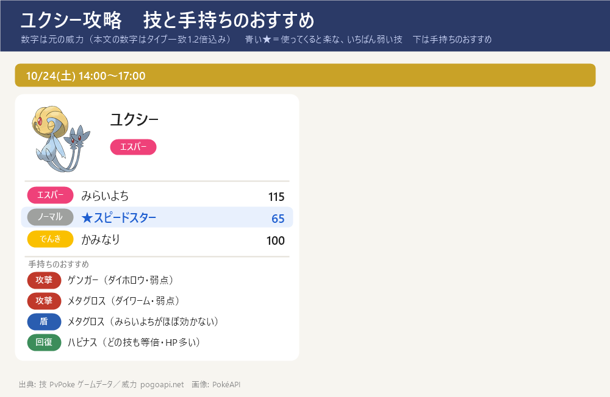
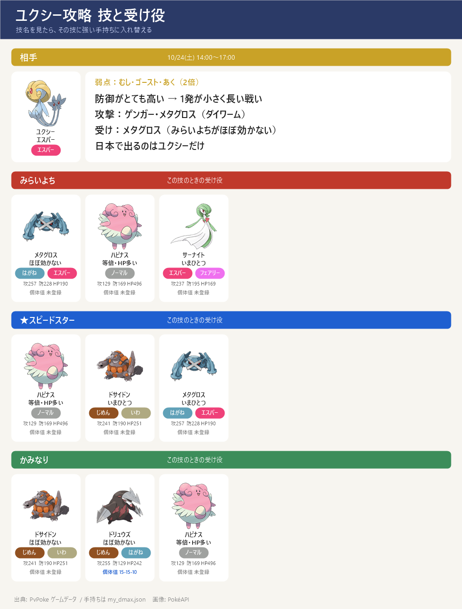

ダイマックス ユクシー 攻略（10/24 土）
ダイマックス ユクシー 攻略（10/24 土）- マックスバトルデイ 10/24(土) 14:00～17:00（3時間だけ）。ダイマックス ユクシー（エスパー）は初登場の★5。日本で出るのはユクシーだけ（エムリット・アグノムはほかの地域）。色違いあり
- 弱点：むし・ゴースト・あく（2倍）。手持ちではゲンガー（ダイホロウ）とメタグロス（れんぞくぎり→ダイワーム）の2体が弱点を突ける
- ねらい目の技：スピードスター（65）。いちばん危ないのは みらいよち（138）
- 防御がとても高い（種族値270）ので1発のダメージは小さいが、攻撃は低い。2人でも勝てる（ポケらく）が、約5分で暴走するので4人がおすすめ
技カード

スペシャルアタック候補とねらい目

- みらいよち（エスパー）威力 138 ← いちばん危ない
- ★ スピードスター（ノーマル）威力 65 ← ねらい目（いちばん弱い）
- かみなり（でんき）威力 100
- 通常技は ねんりき・じんつうりき
- 技は選べない。最初の大技の名前を見て、受け役を合わせる
ボスの攻撃のルール
- 1回のバトルで使う技は2つだけ：このボスのゲージ技（みらいよち・スピードスター・かみなり）から2つが抽選され、片方が『単体攻撃（スペシャル技）』・もう片方が『全体攻撃』に決まる。バトルの間はこの割り当てのまま変わらない
- 単体攻撃（スペシャル技）：ねらわれた1体の頭の上に3本線（黄色い光）が出て約1秒後に当たる。左右にスワイプで避けられる（ギリギリで避けるほど軽い：すぐ約5割減・点滅直前で約7割減）
- 全体攻撃：「○○の全体攻撃！」の予告の帯が出て場の全員に当たる。避けられない → ダイウォールを張るか、その技に強い受け役に交代する
- 見分け方：出た技が『頭上の3本線』なら単体、『○○の全体攻撃！』の帯なら全体。最初の1〜2回でどの技がどちらかが分かる。来た技名に合わせて受け役を置く → 下の『パターンの早見表』『パターン別の作戦』を見る
- 負けてもマックス粒子（MP）は減らない → 組み合わせが悪ければ気にせず入り直してよい（入り直すと組み合わせは変わることがある）
- ルールの出典：ポケモンWiki「マックスバトル」＋みんポケ「回避のしかた」で一致（実際に戦った感覚とも一致）
- このボスだけの注意：単体攻撃（スペシャル技）は威力2倍（出典：みんポケ・1サイトのみ）。だから『3本線（黄色い光）』はできるだけスワイプで避ける
- 全体攻撃で削られる大きさは みらいよち ＞ かみなり ＞ スピードスター の順（みんポケの試算）。通常技 ねんりき・じんつうりき はボスは使わない
交代受けのコツ
- ボスの技は単体攻撃（スペシャル技）と全体攻撃の2種類で、守り方がちがう。単体は交代で受けず回避・全体だけ予告を見て交代で受ける
- 単体攻撃（スペシャル技）＝交代せずスワイプで回避：ねらわれた1体の頭の上に3本線（黄色い光）が出て約1秒後に当たる → すぐ横にスワイプして避ける。交代は間に合わないので、単体攻撃を交代で受け役に回すことはしない（先頭はそのまま避ける）
- 全体攻撃＝予告を見てから受け役に交代：バトル開始時・ボスの技の直後・ダイマックス解除時に「○○の全体攻撃！」の予告の帯が出る → 予告を見てから、その技に強い受け役に交代して受け、受けたら先頭に戻す（避けられないのでダイウォールを張ってもよい）
サイトで違っていた点
- 攻撃のルール（上の節）は、ポケモンWiki・みんポケの回避ページ・実際に戦った感覚の3つで一致＝確定：1回のバトルで2つの技が選ばれ、片方が単体・もう片方が全体。
- ただし『みんポケのユクシーのページ』だけが、「同じ技が単体でも全体でも来る」（＝単体と全体が同じ技名になりうる）と書いている。ほかのサイトや回避ページの説明とは食い違っていて、どちらが正しいかは未確認
- どちらでも「来た技名を見て受け役を合わせる」動き方は変わらない。出典：みんポケ(9db) 26537・回避のしかた 20853・ポケモンWiki「マックスバトル」
出陣する3体
出陣する3体：ゲンガー（攻撃）・メタグロス（受け）・ドサイドン（受け）。連れて行けるのは1人3体まで。下の『パターン別の作戦』の受け1・受け2・攻撃はこの3体の中で選ぶ
ユクシーはメタグロスがいちばん危ないみらいよちをほぼ無効で受けつつ、れんぞくぎり→ダイワームで弱点も突ける主役。ドサイドンがかみなりを半減で受ける受け役 → 全6パターンで先頭も交代先もそろう
攻撃は弱点（ゴースト）を突くゲンガー（ダイホロウ）が1発いちばん大きい。ゲンガーはみらいよちが弱点なので、みらいよちのときは前に出さず攻撃だけ
長期戦なので、回復（ダイリカバリー）のハピナスを4人目に足すのもよい（ハピナスはどの技も等倍でHPが多い）
パターンの早見表
どのパターンでも、まず弱点のない受け役で受けて技を確認 → 下のとおり入れ替える。評価は避けられない『全体攻撃』で決める：技の威力そのものが高い（150以上）か、相性の良い受け役でも大きく削られる（目安70以上）と『はずれ』、威力が低め（100以下）で相性の良い受け役なら軽い（目安50以下）と『当たり』、その間が『ふつう』。全技が高威力のボスでは『当たり』は出ない（単体攻撃はスワイプで避けられるので評価に入れない）
| # | 単体 3本線・避ける | 全体 予告・避けられない | 全体の 威力 | 評価 | 全体の受け役 |
|---|---|---|---|---|---|
| 1 | かみなり | スピードスター | 65 | 当たり | ゲンガー |
| 2 | みらいよち | スピードスター | 65 | 当たり | メタグロス |
| 3 | スピードスター | かみなり | 100 | 当たり | ドサイドン |
| 4 | みらいよち | かみなり | 100 | 当たり | ドサイドン |
| 5 | スピードスター | みらいよち | 138 | ふつう | メタグロス |
| 6 | かみなり | みらいよち | 138 | ふつう | メタグロス |
数字＝全体攻撃1発の目安（威力×相性・タイプ一致1.2倍込み）。『全体の威力』は技そのものの威力。評価＝威力150以上か目安70以上→はずれ／威力100以下かつ目安50以下→当たり／その間→ふつう。手持ち・個体値・技レベルは my_dmax.json より
パターン別の作戦
受け2体＋攻撃1体が基本。各パターンで上の『出陣する3体』の中から 受け1（基本の先頭・スペシャル技をスワイプで回避しつつ受ける）／受け2（全体攻撃の予告で交代。攻撃役が全体を半減以下で受けられるなら攻撃役に交代／受け1のままでよいなら交代不要）／攻撃（ダイマックスのとき交代）を選ぶ。スペシャル技は交代で受けず回避し、全体攻撃だけ交代で受ける（当たり→ふつう→はずれ の順）
パターン1 単体=かみなり／全体=スピードスター ［当たり］
評価：当たり — 避けられない全体攻撃が威力低めで、相性の良い受け役なら軽い組み合わせ。少人数ならこれになるまで入り直すのが定番
この組み合わせは 単体＝かみなり（頭上に3本線・スワイプで回避）と 全体＝スピードスター（「スピードスターの全体攻撃！」の予告・避けられない）。受け2体＋攻撃1体でこう動く：
受け1（基本の先頭）＝ドサイドン：スペシャル技〔かみなり〕をほぼ効かない（1発39）で受けられる。スペシャル技は交代で受けられないので先頭に置き、3本線が出たらスワイプで回避しつつ通常技でゲージをためる
受け2（全体攻撃の予告で交代）＝攻撃役〔ゲンガー〕に交代：攻撃役が全体攻撃〔スピードスター〕をほぼ効かない（1発25）で受けられる → 全体攻撃の予告が出たら攻撃役に交代して受け、受けたら受け1に戻す
攻撃（ダイマックスのとき交代）＝ゲンガー：ゴースト技でボスの弱点を突ける（1発282）。ダイマックスがたまったら交代して弱点を突く
見分け方：最初に頭上の3本線でかみなり、予告の帯でスピードスターが来たらこのパターン
パターン2 単体=みらいよち／全体=スピードスター ［当たり］
評価：当たり — 避けられない全体攻撃が威力低めで、相性の良い受け役なら軽い組み合わせ。少人数ならこれになるまで入り直すのが定番
この組み合わせは 単体＝みらいよち（頭上に3本線・スワイプで回避）と 全体＝スピードスター（「スピードスターの全体攻撃！」の予告・避けられない）。受け2体＋攻撃1体でこう動く：
受け1（基本の先頭）＝メタグロス：スペシャル技〔みらいよち〕をほぼ効かない（1発54）で受けられる。スペシャル技は交代で受けられないので先頭に置き、3本線が出たらスワイプで回避しつつ通常技でゲージをためる
受け2（全体攻撃の予告で交代）＝攻撃役〔ゲンガー〕に交代：攻撃役が全体攻撃〔スピードスター〕をほぼ効かない（1発25）で受けられる → 全体攻撃の予告が出たら攻撃役に交代して受け、受けたら受け1に戻す
攻撃（ダイマックスのとき交代）＝ゲンガー：ゴースト技でボスの弱点を突ける（1発282）。ダイマックスがたまったら交代して弱点を突く。ただし単体〔みらいよち〕が弱点なので、みらいよちに狙われたら攻撃だけしてスワイプで回避
見分け方：最初に頭上の3本線でみらいよち、予告の帯でスピードスターが来たらこのパターン
パターン3 単体=スピードスター／全体=かみなり ［当たり］
評価：当たり — 避けられない全体攻撃が威力低めで、相性の良い受け役なら軽い組み合わせ。少人数ならこれになるまで入り直すのが定番
この組み合わせは 単体＝スピードスター（頭上に3本線・スワイプで回避）と 全体＝かみなり（「かみなりの全体攻撃！」の予告・避けられない）。受け2体＋攻撃1体でこう動く：
受け1（基本の先頭）＝ゲンガー：スペシャル技〔スピードスター〕をほぼ効かない（1発25）で受けられる。スペシャル技は交代で受けられないので先頭に置き、3本線が出たらスワイプで回避しつつ通常技でゲージをためる
受け2（全体攻撃の予告で交代）＝ドサイドン：全体攻撃〔かみなり〕を3体でいちばん軽いほぼ効かない（1発39）で受けられる → 予告が出たら交代して受け、受けたら受け1に戻す。この受け役はダイウォールを持たないので、盾を張るなら メタグロス（ダイウォール Lv2）
攻撃（ダイマックスのとき交代）＝ゲンガー（受け1と兼任）：ゴースト技でボスの弱点を突ける（1発282）。ダイマックスがたまったら交代して弱点を突く
見分け方：最初に頭上の3本線でスピードスター、予告の帯でかみなりが来たらこのパターン
パターン4 単体=みらいよち／全体=かみなり ［当たり］
評価：当たり — 避けられない全体攻撃が威力低めで、相性の良い受け役なら軽い組み合わせ。少人数ならこれになるまで入り直すのが定番
この組み合わせは 単体＝みらいよち（頭上に3本線・スワイプで回避）と 全体＝かみなり（「かみなりの全体攻撃！」の予告・避けられない）。受け2体＋攻撃1体でこう動く：
受け1（基本の先頭）＝メタグロス：スペシャル技〔みらいよち〕をほぼ効かない（1発54）で受けられる。スペシャル技は交代で受けられないので先頭に置き、3本線が出たらスワイプで回避しつつ通常技でゲージをためる
受け2（全体攻撃の予告で交代）＝ドサイドン：全体攻撃〔かみなり〕を3体でいちばん軽いほぼ効かない（1発39）で受けられる → 予告が出たら交代して受け、受けたら受け1に戻す。この受け役はダイウォールを持たないので、盾を張るなら メタグロス（ダイウォール Lv2）
攻撃（ダイマックスのとき交代）＝ゲンガー：ゴースト技でボスの弱点を突ける（1発282）。ダイマックスがたまったら交代して弱点を突く。ただし単体〔みらいよち〕が弱点なので、みらいよちに狙われたら攻撃だけしてスワイプで回避
見分け方：最初に頭上の3本線でみらいよち、予告の帯でかみなりが来たらこのパターン
パターン5 単体=スピードスター／全体=みらいよち ［ふつう］
評価：ふつう — 受け役を合わせれば対応できる組み合わせ。ただし全体攻撃はそれなりに重いので、盾・交代をサボらない
この組み合わせは 単体＝スピードスター（頭上に3本線・スワイプで回避）と 全体＝みらいよち（「みらいよちの全体攻撃！」の予告・避けられない）。受け2体＋攻撃1体でこう動く：
受け1（基本の先頭）＝ゲンガー：スペシャル技〔スピードスター〕をほぼ効かない（1発25）で受けられる。スペシャル技は交代で受けられないので先頭に置き、3本線が出たらスワイプで回避しつつ通常技でゲージをためる
受け2（全体攻撃の予告で交代）＝メタグロス：全体攻撃〔みらいよち〕を3体でいちばん軽いほぼ効かない（1発54）で受けられる → 予告が出たら交代して受け、受けたら受け1に戻す。この受け役はダイウォールも張れる
攻撃（ダイマックスのとき交代）＝ゲンガー（受け1と兼任）：ゴースト技でボスの弱点を突ける（1発282）。ダイマックスがたまったら交代して弱点を突く。全体〔みらいよち〕が弱点なので、みらいよちが全体のときは前に出さない
見分け方：最初に頭上の3本線でスピードスター、予告の帯でみらいよちが来たらこのパターン
パターン6 単体=かみなり／全体=みらいよち ［ふつう］
評価：ふつう — 受け役を合わせれば対応できる組み合わせ。ただし全体攻撃はそれなりに重いので、盾・交代をサボらない
この組み合わせは 単体＝かみなり（頭上に3本線・スワイプで回避）と 全体＝みらいよち（「みらいよちの全体攻撃！」の予告・避けられない）。受け2体＋攻撃1体でこう動く：
受け1（基本の先頭）＝ドサイドン：スペシャル技〔かみなり〕をほぼ効かない（1発39）で受けられる。スペシャル技は交代で受けられないので先頭に置き、3本線が出たらスワイプで回避しつつ通常技でゲージをためる
受け2（全体攻撃の予告で交代）＝メタグロス：全体攻撃〔みらいよち〕を3体でいちばん軽いほぼ効かない（1発54）で受けられる → 予告が出たら交代して受け、受けたら受け1に戻す。この受け役はダイウォールも張れる
攻撃（ダイマックスのとき交代）＝ゲンガー：ゴースト技でボスの弱点を突ける（1発282）。ダイマックスがたまったら交代して弱点を突く。全体〔みらいよち〕が弱点なので、みらいよちが全体のときは前に出さない
見分け方：最初に頭上の3本線でかみなり、予告の帯でみらいよちが来たらこのパターン
手持ちが受けるダメージ
- ハピナス：みらいよち 138 ／ スピードスター 65 ／ かみなり 100
- メタグロス：みらいよち 54（ほぼ効かない） ／ スピードスター 41（いまひとつ） ／ かみなり 100
- ドサイドン：みらいよち 138 ／ スピードスター 41（いまひとつ） ／ かみなり 39（ほぼ効かない）
- ドリュウズ：みらいよち 86（いまひとつ） ／ スピードスター 41（いまひとつ） ／ かみなり 39（ほぼ効かない）
- サーナイト：みらいよち 86（いまひとつ） ／ スピードスター 65 ／ かみなり 100
- シャワーズ：みらいよち 138 ／ スピードスター 65 ／ かみなり 160（弱点）
- エースバーン：みらいよち 138 ／ スピードスター 65 ／ かみなり 100
- フシギバナ：みらいよち 221（弱点） ／ スピードスター 65 ／ かみなり 62（いまひとつ）
- カイリキー：みらいよち 221（弱点） ／ スピードスター 65 ／ かみなり 100
- インテレオン：みらいよち 138 ／ スピードスター 65 ／ かみなり 160（弱点）
- ゲンガー：みらいよち 221（弱点） ／ スピードスター 25（ほぼ効かない） ／ かみなり 100
- 数字＝技の威力 × 相性（ボスと同じタイプの技は1.2倍）。並びは受けやすい順（防御とHPも計算に入れた）
攻撃役の1発ダメージ
- 前提：相手の防御の補正 0.85（ディアルガ・パルキアのページと同じ）。個体値15/15/15として CP からレベルを逆算。ボスのHPはどのサイトにも未掲載なので、何回で倒せるかは出していない → 手持ち同士の比べ合い用
- 1発のダメージ（今の技レベル → Lv3 にしたとき）
- ● ゲンガー（ダイホロウ・弱点）：1発 282（Lv3 済み）
- エースバーン（ダイバーン・等倍）：1発 183 ／ Lv3：206
- ● メタグロス（ダイワーム・弱点）：1発 168 ／ Lv3：235
- ドサイドン（ダイアース・等倍）：1発 135 ／ Lv3：158
- インテレオン（ダイストリーム・等倍）：1発 120 ／ Lv3：168
- サーナイト（ダイフェアリー・等倍）：1発 120 ／ Lv3：140
- ドリュウズ（ダイアース・等倍）：1発 100 ／ Lv3：140
- シャワーズ（ダイストリーム・等倍）：1発 96 ／ Lv3：112
- フシギバナ（ダイソウゲン・等倍）：1発 90 ／ Lv3：126
- ハピナス（ダイアタック・等倍）：1発 70 ／ Lv3：98
- ゲンガーのダイホロウは Lv3 済み（10/23）・CP2500 に強化（10/24） → 1発 282（CP2160・Lv3 のときは 263）。「ダイマックス育成順」の4位
並びと動き方
- メタグロス：みらいよちはほぼ効かない（54）、スピードスターも いまひとつ。かみなりだけ等倍 → 受けと攻撃を両方こなす主役
- ゲンガー：1発282（ダイホロウ Lv3・CP2500）で手持ちいちばんだが、みらいよちが弱点（221）→ 攻撃のときだけ出して、受けには使わない
- ハピナス：どの技も等倍で HP が多い → 回復役。2体目のハピナスを受けにする手もある（ゲームウィズのおすすめはハピナス2体＋ゲンガー）
- ドサイドン：かみなりはほぼ効かない、スピードスターもいまひとつ（みらいよちは等倍）→ 技がかみなりのときの受けの控え
- 出さない：シャワーズ・インテレオン（かみなりが弱点）、フシギバナ・カイリキー（みらいよちが弱点）
戦い方のコツ
- 出陣させる3体：ゲンガー・メタグロス・ドサイドン（ゲンガー＝攻撃・ダイホロウ／メタグロス＝受け・みらいよちほぼ無効・攻撃も／ドサイドン＝受け・かみなりを半減）。マックスバトルに連れて行けるのは1人3体まで。下の入れ替えはこの3体の中で行う
- 最初の受け役はメタグロス：ボスの技（狙い撃ち・全体攻撃）は1回使われるまで分からない（ほかの人に当たっても技名は出る）→ 技名が分かるまではメタグロスで受ける（みらいよちがほぼ効かず、弱点になる技がない）。分かったら下のとおり入れ替える
- みらいよちなら → 盾はそのままメタグロス（ほぼ効かない）。攻撃はメタグロス・ドサイドンでいく（ゲンガーは「みらいよち」が弱点なので、ダイマックス以外は下げておく）
- スピードスターなら → 盾をドサイドンに替える（いまひとつ）。攻撃はゲンガー・メタグロスでいく
- かみなりなら → 盾をドサイドンに替える（ほぼ効かない）。攻撃はゲンガー・メタグロスでいく
- 野良では抜けずに受け役を入れ替える：ボスの技（狙い撃ち1つ＋全体攻撃1つ）は挑戦ごとに抽選されるが、途中で抜けると残りの3人が不利になる → 技名を見て、その技に強い手持ちに替える。入り直し（MP は勝ったときだけ減る）は知り合いと組んで、全員で決めたときだけ
- タンクは通常技だけ連打：スペシャル技よりメーターが早くたまる。0.5秒の通常技（ハピナスのはたく・メタグロスのれんぞくぎり）が向く
- エネルギーはスワイプで取る（タップではない）。アイコン1個でメーター +10%
- ダイマックス中は「盾 → 回復 → 攻撃」の順で決める：まずダイウォール（3回まで重ねがけ）、HPが減っていればダイリカバリー、それ以外はダイ攻撃
- ダイリカバリーは同じ4人グループの「場に出ている」4体だけ回復。控えのポケモンは回復しない
- 回復量は使ったポケモンの最大HPが基準：Lv1 8%・Lv2 12%・Lv3 16% を4体に同じ量 → ハピナス（HP397）で Lv1 は 31、Lv2 は 47。Lv2 に上げるのが先
- 勝負は約5分：開始 約4分30秒で「暴走寸前」と出て、約5分～5分30秒で暴走する（伝説★5はボスの攻撃が約3倍、★3は約9倍）。暴走後はすぐ全滅しやすい → 「暴走寸前」が出たら盾・回復はやめてダイ攻撃だけ。ダイマックスは出し惜しみしない（9db・Bulbapedia。決まった時間切れは無く、英語の Bulbapedia だけ約8分で打ち切りと書く）
- 倒れても応援：応援1回で仲間のメーター +20%。速く押しすぎると数えられないので、少し間をあけて押す
- 一度に戦えるのは4人まで。3時間だけなので、キャンプファイアで人を集めて早めに始める
MP（マックス粒子）とこの日のボーナス
- 1戦 800MP（負けたら減らない）。14:00～17:00 は1日に集められる上限が1,600（ふだん800）
- 0:00～17:00：歩いてもらえるマックス粒子が2倍・必要な距離が1/4 → 午前中に歩いてためる
- 前の日までに1,500 ためておく → 当日の分（上限1,600）と合わせて約3,100 ＝ 3戦。パックを開ければもっと（1,500 未満のときだけ開けられる）
- 有料チケット（700円）：マックスバトルの XP が2倍（ゲームウィズ）
- ディアルガ戦との兼ね合いはない：MP をためる日（11/12・13）とは離れているので、この日は使い切ってよい
出典: イベント: ポケらく post163995・ゲームウィズ 579398 ／ タイプ・技・威力: PvPoke ゲームデータ ／ 戦い方: ディアルガ攻略ページと同じ（ポケらく・ゲームウィズ・ドクターポケゴーゴー・公式ヘルプ）／ 手持ち: my_dmax.json ／ 育成: 「ダイマックス育成順」ページ
画像: PokéAPI ／ 更新 2026-10-24